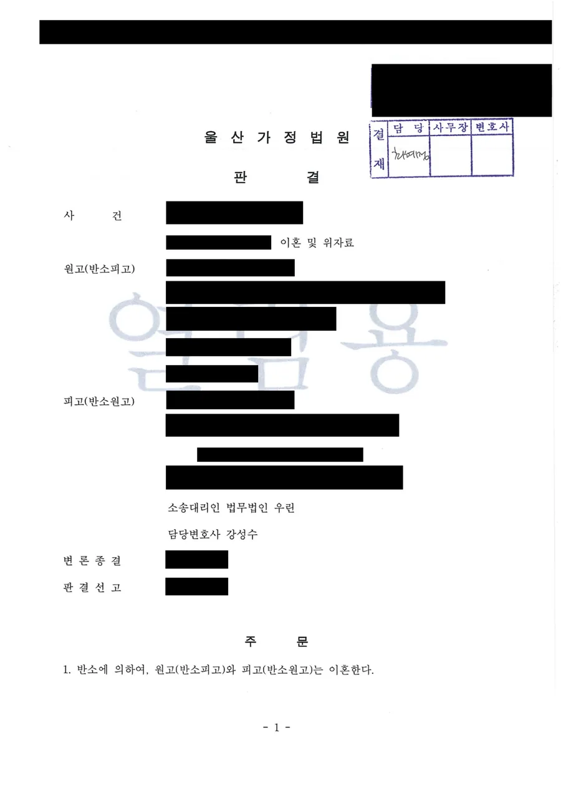

핵심 결과
이혼소송 서류를 먼저 받는 쪽이 불리하다고 생각하기 쉽습니다.
실제로는 그렇지 않습니다.
누가 먼저 냈느냐보다 누구에게 파탄의 주된 책임이 있느냐가 결과를 정합니다.
이 사건에서 남편이 먼저 이혼과 위자료를 청구했습니다.
의뢰인은 반소로 맞섰습니다.
법원은 남편의 청구를 전부 기각하고, 반소에 의해 이혼을 인용하면서 위자료 2,000만 원을 인정했습니다.
| 구분 | 내용 |
|---|---|
| 사건 분야 | 이혼 및 위자료 (본소·반소) |
| 상황 | 남편이 먼저 본소로 이혼과 위자료 청구 |
| 의뢰인 대응 | 반소로 이혼과 위자료 청구 |
| 핵심 쟁점 | 파탄의 주된 책임이 누구에게 있는지 |
| 결정적 자료 | 통화 발신 내역, 배송 내역, 도박으로 인한 금전 요구 정황 |
| 최종 결과 | 본소 전부 기각, 반소 이혼 인용, 위자료 2,000만 원 |
어떤 사건이었나
두 사람은 혼인신고를 마친 법률상 부부였고 자녀는 없었습니다.
남편은 혼인기간 중 특정 여성과 지속적으로 연락을 주고받았습니다.
이른 아침과 늦은 밤 시간을 포함해 400회가 넘는 전화 발신이 있었습니다.
온라인 쇼핑몰을 통해 그 여성의 주소지로 생활용품을 배송하기도 했습니다.
여기에 더해 남편은 혼인생활 중 상습적으로 도박을 했습니다.
상당한 경제적 손실이 생겼고, 의뢰인에게 여러 차례 돈을 빌리기도 했습니다.
두 사람은 협의이혼의사확인을 신청했지만, 의뢰인이 해외에 체류하게 되면서 확인기일에 출석하지 못했습니다.
그 뒤 남편이 먼저 이혼소송을 제기했습니다.
남편이 내세운 논리
- 통화가 있었던 무렵에는 이미 혼인관계가 돌이킬 수 없이 파탄된 상태였다
- 협의이혼의사확인까지 신청했으니 파탄 시점은 그보다 앞선다
- 도박을 이유로 아내가 이혼을 원한다고 표현한 적도 없다
- 따라서 파탄의 책임은 자신에게 있지 않다
파탄 시점을 앞으로 당겨 부정행위를 파탄 이후의 일로 만들려는 전형적인 방어입니다.
상대가 먼저 이혼소송을 내면 불리한가요
아닙니다. 오히려 유책배우자가 먼저 소를 내면 그 청구는 기각될 수 있습니다.
우리 법원은 원칙적으로 혼인 파탄에 주된 책임이 있는 배우자의 이혼청구를 받아들이지 않습니다.
이를 유책배우자의 이혼청구 제한이라고 합니다.
그래서 이혼소송에서 진짜 다툼은 이혼 여부가 아니라 책임의 소재인 경우가 많습니다.
이때 반소가 중요합니다.
본소만 기각되면 혼인관계는 그대로 유지됩니다.
이혼도 하고 위자료도 받으려면 별도로 반소를 제기해야 합니다.
이 사건에서 의뢰인은 민법 제840조 제1호(배우자에 부정한 행위가 있었을 때)와 제6호(기타 혼인을 계속하기 어려운 중대한 사유)를 들어 반소를 냈습니다.
성관계 증거가 없어도 부정행위가 인정되나요
인정됩니다. 민법 제840조 제1호의 부정한 행위는 간통보다 넓은 개념입니다.
부부의 정조의무에 충실하지 않은 일체의 행위가 여기에 들어갑니다.
그래서 결정적인 장면을 잡아야만 인정되는 것이 아닙니다.
이 사건에서 제출된 것도 통화 발신 내역과 배송 내역이었습니다.
법원은 통화의 횟수와 시간대를 그대로 인정사실로 적었습니다.
이른 아침과 늦은 밤 시간대의 반복적인 연락은 그 자체로 관계의 성격을 드러냅니다.
| 부정행위 입증에 쓰이는 자료 | 설명 |
|---|---|
| 통화 발신 내역 | 횟수와 시간대가 관계의 성격을 보여줍니다 |
| 배송·결제 내역 | 상대 주소지로 보낸 물건, 함께 쓴 결제 기록 |
| 메신저 대화 | 호칭과 대화의 내용 |
| 위치·이동 기록 | 함께 머문 시간과 장소 |
사진 한 장이 없어도, 반복된 기록은 그 자체로 증거가 됩니다.
해결 전략
1. 파탄 시점 논리를 정면으로 깼습니다
남편의 방어는 파탄이 먼저이고 부정행위가 나중이라는 순서에 기대고 있었습니다.
그래서 그 순서를 뒤집는 데 집중했습니다.
남편은 협의이혼의사확인 신청 전부터 본소를 제기한 이후까지 그 여성과 지속적으로 통화했습니다.
즉 연락은 파탄 이후에 시작된 것이 아니라 그 전부터 이어져 온 것이었습니다.
법원도 이 점을 받아들여, 두 사람의 관계가 혼인관계가 완전히 파탄된 이후의 관계라고 보기 어렵다고 판단했습니다.
2. 도박을 파탄 원인으로 함께 세웠습니다
부정행위 하나만 다투면 상대는 계속 시점을 문제 삼습니다.
그래서 도박이라는 별개의 축을 함께 세웠습니다.
혼인생활 중의 상습적인 도박, 그로 인한 경제적 손실, 배우자에게 반복해서 도박자금을 요구한 사실을 정리했습니다.
법원은 도박 습벽이 가벼워 보이지 않고 아내에게 종종 도박자금을 요구하기도 했으므로, 협의이혼의사확인 신청에 이르기까지 도박 습벽도 상당한 영향을 주었을 것이라고 보았습니다.
3. 반소를 함께 제기했습니다
본소 방어만 했다면 남편의 청구가 기각되는 데서 끝났을 것입니다.
그러면 혼인관계는 유지되고 위자료도 없습니다.
의뢰인의 목표는 관계를 정리하는 것이었기 때문에, 방어와 동시에 반소로 이혼과 위자료를 청구했습니다.
결과
법원은 두 사람의 혼인관계가 회복할 수 없을 정도로 파탄되었다고 인정했습니다.
그리고 그 파탄의 보다 중한 책임은 혼인기간 중 부정행위로 신의를 저버리고 도박으로 경제적 어려움을 초래한 남편에게 있다고 판단했습니다.
남편의 주장은 모두 받아들여지지 않았습니다.
유책배우자인 남편의 본소 이혼 및 위자료 청구는 이유 없다고 보았습니다.
최종 결과
반소에 의하여 이혼이 선고되었습니다.
남편은 의뢰인에게 위자료 2,000만 원과 지연손해금을 지급하게 되었습니다.
남편의 본소 이혼 청구와 위자료 청구는 모두 기각되었습니다.
소송비용은 본소와 반소를 합해 각자 부담으로 정해졌습니다.
자주 묻는 질문
| 질문 | 답변 |
|---|---|
| 상대가 먼저 이혼소송을 내면 불리한가요? | 아닙니다. 파탄의 주된 책임이 상대에게 있으면 그 청구는 기각될 수 있습니다. |
| 본소만 방어하면 되지 않나요? | 방어만 하면 혼인관계가 유지됩니다. 이혼과 위자료를 원하면 반소를 내야 합니다. |
| 성관계 증거가 없어도 부정행위가 되나요? | 됩니다. 민법 제840조 제1호의 부정한 행위는 정조의무에 충실하지 않은 일체의 행위를 말합니다. |
| 통화 내역만으로 인정될 수 있나요? | 횟수와 시간대가 반복적이면 관계의 성격을 보여주는 증거로 평가됩니다. |
| 협의이혼을 신청했으면 이미 파탄된 것 아닌가요? | 신청 사실만으로 파탄 시점이 확정되지는 않으며, 그 전후 정황을 함께 봅니다. |
| 위자료는 어떻게 정해지나요? | 파탄의 경위, 혼인기간, 부부공동생활의 구체적 모습 등 여러 사정을 참작해 정합니다. |
결론
이혼소송에서 먼저 서류를 받았다는 사실 자체는 불리한 조건이 아닙니다.
중요한 것은 파탄의 책임이 어디에 있는지, 그리고 그것을 무엇으로 증명하는지입니다.
상대가 파탄 시점을 앞으로 당기려 한다면, 그 시점 이전부터 이어진 기록을 찾아야 합니다.
그리고 방어만으로는 원하는 결과에 닿지 않습니다.
이혼과 위자료를 원한다면 반소를 함께 준비해야 합니다.
본 사례는 의뢰인 보호를 위해 일부 내용을 각색했으며, 판결 결과와 위자료 액수는 실제와 같습니다.
사무장·상담실장 없이 변호사가 직접 상담합니다
이혼소송은 소장을 받은 뒤 답변서 제출 기한이 정해져 있습니다.
이 시기에 반소를 함께 낼지 결정해야 합니다.
법무법인 우린은 강성수 변호사가 직접 상담하고, 증거 정리부터 반소 제기, 위자료 산정과 법정 변론까지 직접 진행합니다.
이혼소송 서류를 받으셨다면, 지금 남아 있는 통화·결제·메신저 기록부터 확인해야 합니다.
이 글은 일반적인 법률 정보 제공을 위한 자료이며, 개별 사건의 결과를 보장하지 않습니다. 구체적인 대응은 사실관계와 증거에 따라 달라질 수 있습니다.